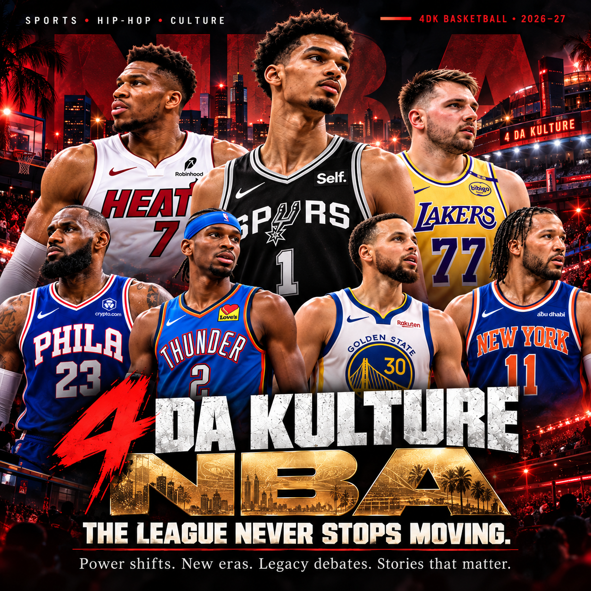
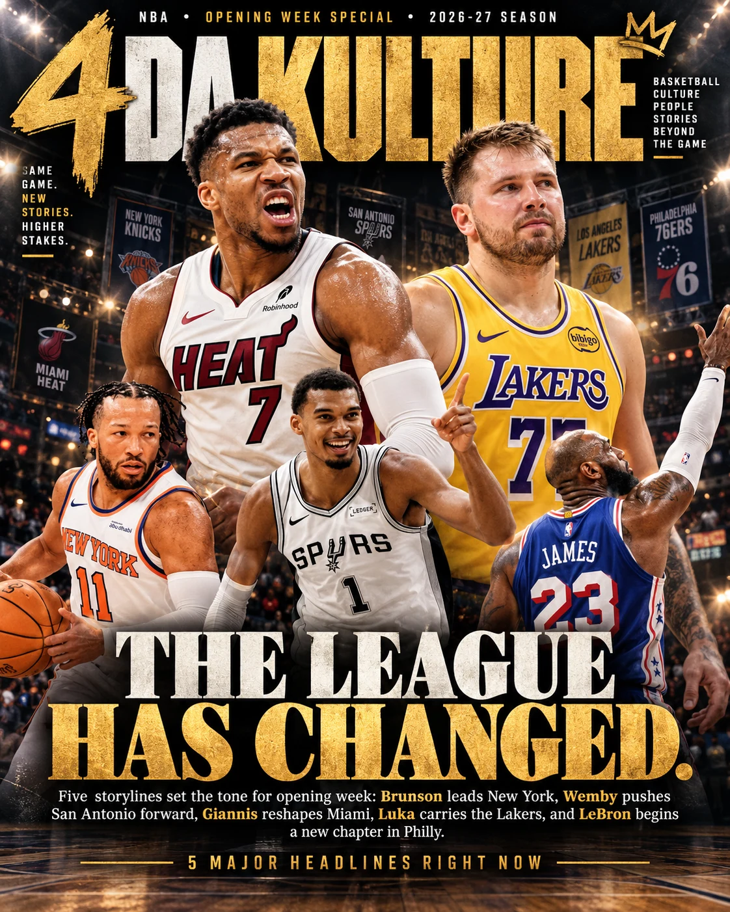
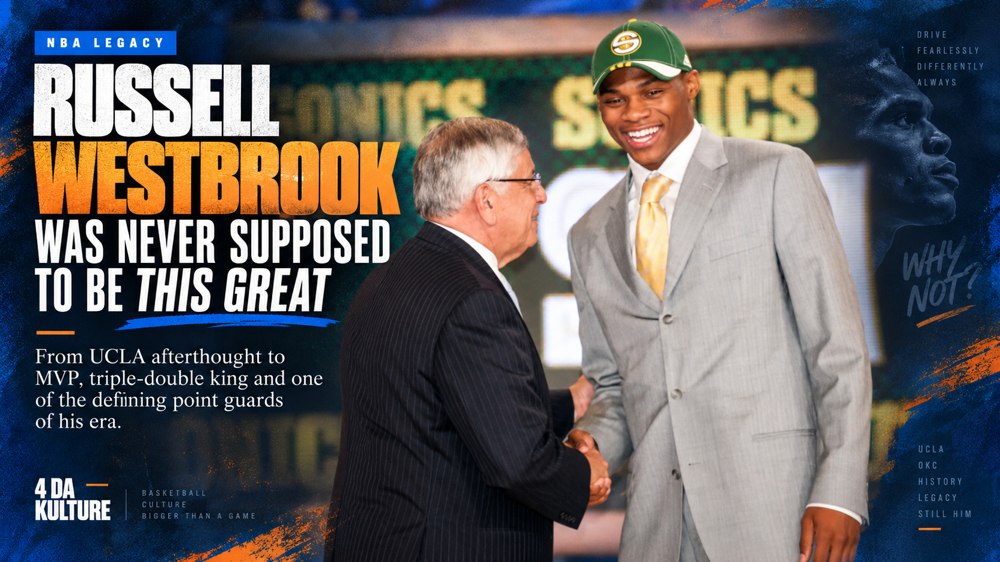
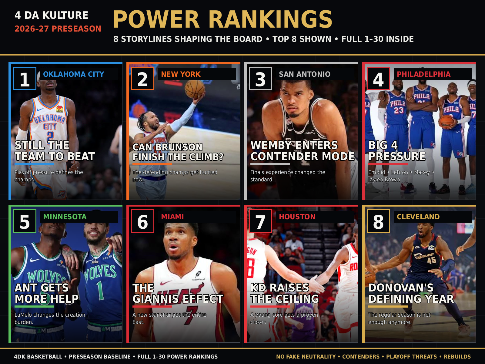
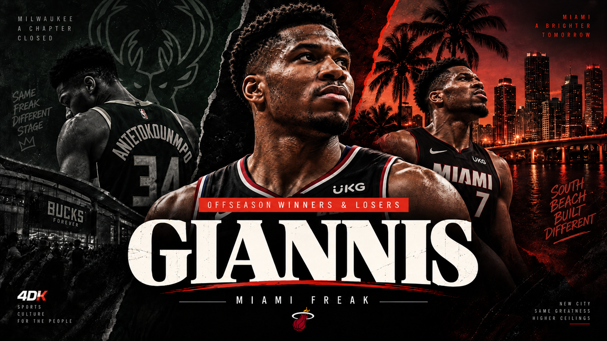
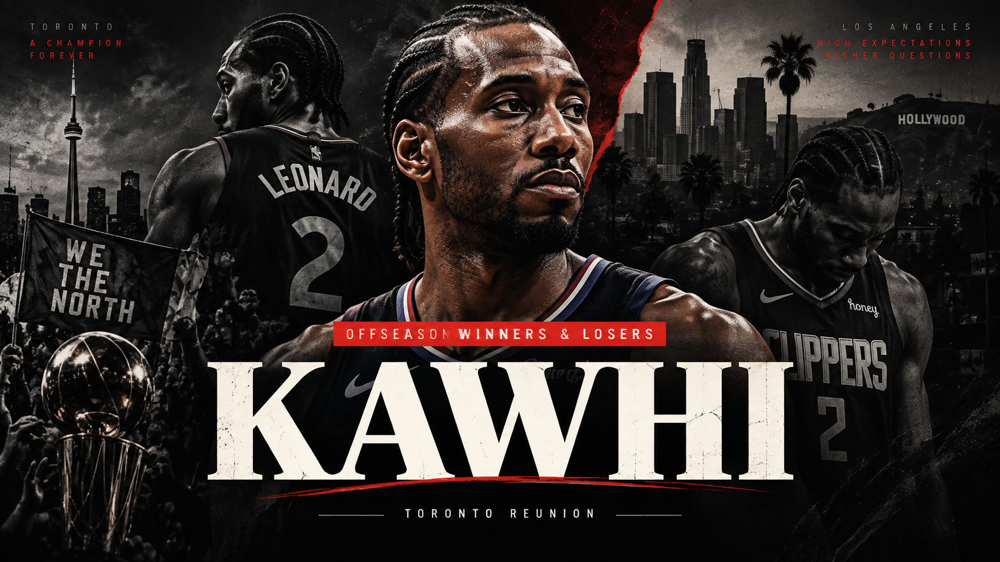
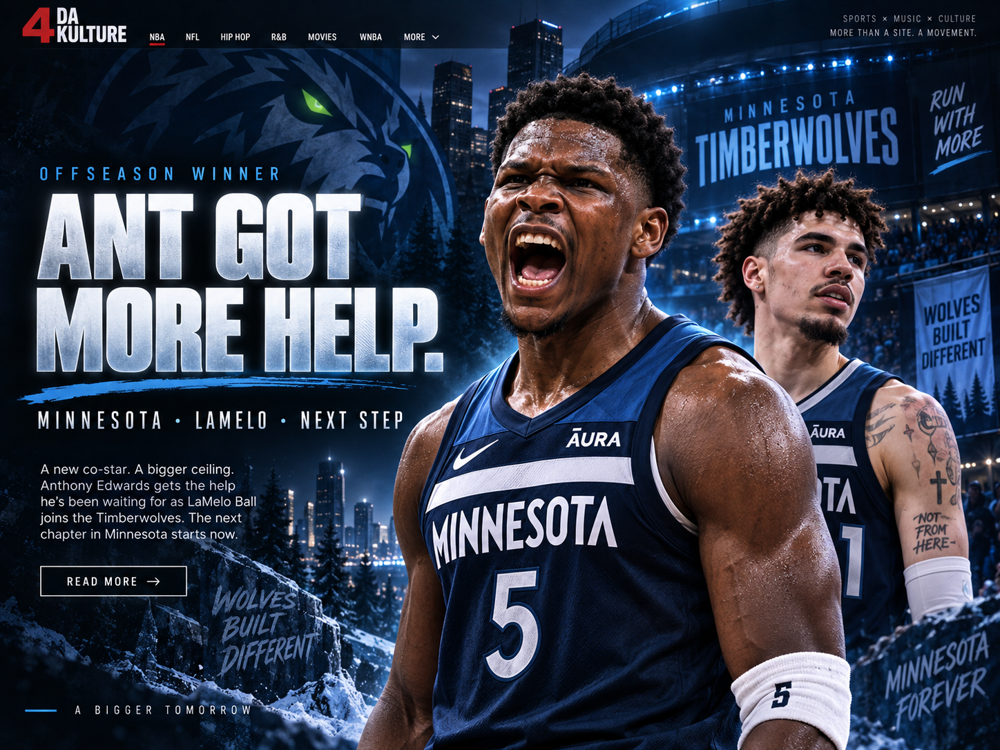
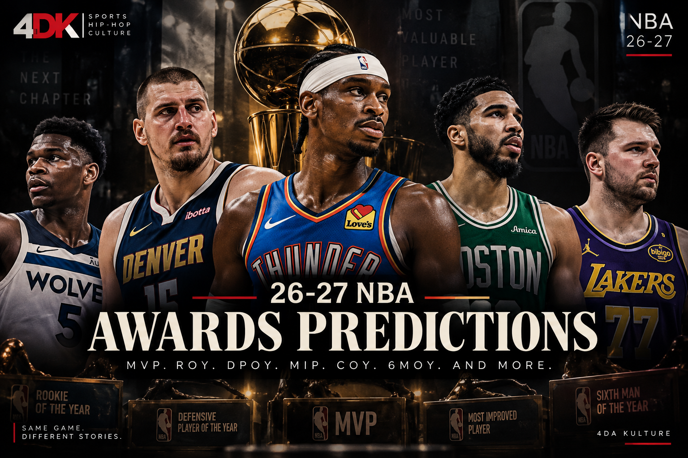
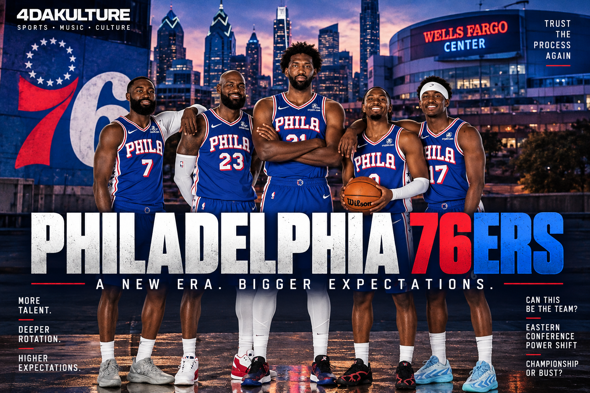
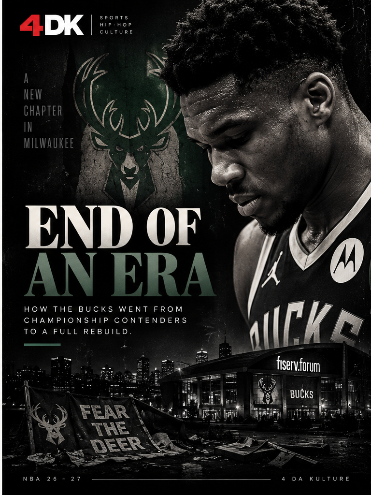

Russell Westbrook Was Never Supposed to Be This Great
From UCLA afterthought to MVP, triple-double king and one of the defining point guards of his era.
New York wears the crown. LeBron brings the spotlight to Philadelphia. Wemby and Shai resume the West’s biggest argument. From opening night forward, the games get the last word — and 4 Da Kulture will have ours.

4DK ORIGINAL • THE 2026–27 NBA SEASON • READ THE FULL PREVIEW →Boston’s defensive identity meets the Detroit team that expects to stay near the top of the East.
THE 4DK DESK → 4:00 PM PT • NEW YORK76ERS @ KNICKSThe champions raise a banner. LeBron makes his Philadelphia regular-season debut. Pressure immediately.
THE OPENING-WEEK FEATURE → 6:30 PM PT • SAN ANTONIOTHUNDER @ SPURSShai versus Wemby. Oklahoma City wants its place back on top; San Antonio wants to take it.
THE 4DK SEASON PREVIEW →
New York defends its crown. LeBron joins Philly. Giannis transforms Miami. Shai and Wemby face off. Luka takes full command in Los Angeles. The five biggest stories before the 2026–27 season tips off.
READ THE FIVE HEADLINES →
Fifty names. Fifty original scouting profiles. Every player's age, image and season stats — plus our new ranking movement tracker.
Our October 15 analysis digs into Miami's Giannis fit, Jalen Duren's next test, Boston's defense and the pressure surrounding opening week.
Power shifts. New eras. Legacy debates. Pressure teams. 4DK covers the league with a point of view.

FROM THE 4DK ARCHIVE • NBA LEGACYFROMOur locked preseason board starts OKC, New York, San Antonio, Philadelphia and Minnesota — with all 30 teams getting the full 4DK treatment.

Every feature gets its own visual world — not just a generic team card.
From UCLA afterthought to MVP, triple-double king and one of the defining point guards of his era.

OFFSEASON WINNERSAME FREAK.Giannis leaves Milwaukee for Miami — and steps into a situation built for immediate pressure.

WINNER / LOSERKAWHI WINS.Kawhi gets his Toronto reunion. The Clippers are left with the bill.

OFFSEASON WINNERANT GOTWhy LaMelo Ball might be the addition Anthony Edwards has needed.

4DK PREDICTIONSWHO TAKESLuka for MVP. Wemby for DPOY. Darryn Peterson for Rookie of the Year.

THE EASTTHE POWERPhilly loaded up while Boston lost its 1B. The East looks completely different.

FRANCHISE RETROSPECTIVETHE PARTY'S OVER.2021 CHAMPIONS → 32–50 → REBUILDHow a championship window slowly closed — and how Milwaukee reached the end of an era.
Five positions. Three choices each. No do-overs. Build an all-time starting five and see if your squad has enough scoring, playmaking, defense and spacing to threaten perfection.
Play the 82–0 Challenge →A move this big doesn't come with patience. Miami expects results now.
READ THE MIAMI BREAKDOWN →The challenge changes when every team in the league measures itself against you.
READ THE OKC SEASON OUTLOOK →A franchise-defining transition with Luka carrying the next era.
READ THE LAKERS OUTLOOK →